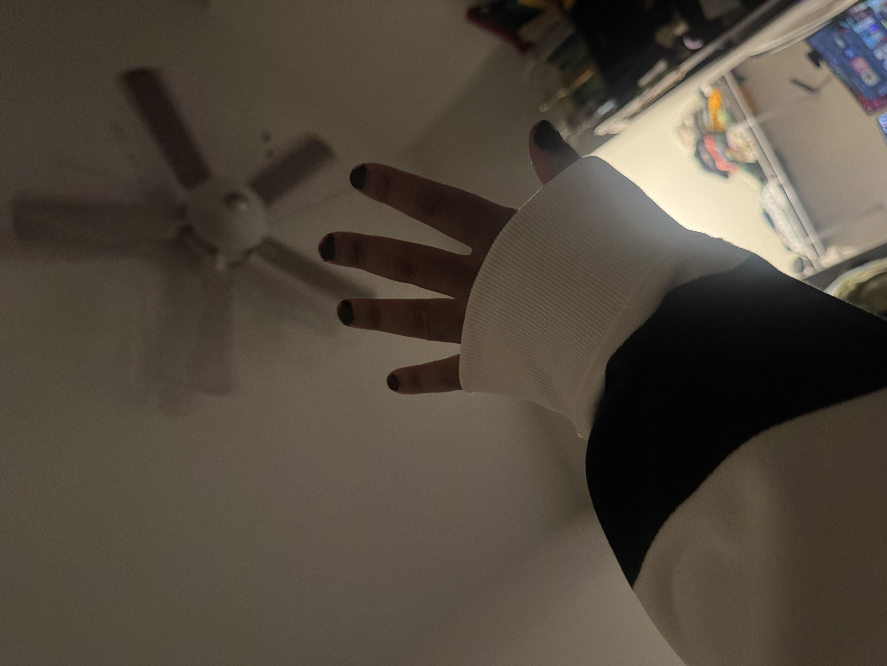

Honestly, I'm just pretty defeated.
I don't really have an ironic funny to say.
At this point, it's getting pretty scary again.
Being a bastard must have me cursed to be alone.
My mother won't let me talk to my sisters.
"Friends" tell me they don't care about my life.
Therapy chooses to lie and not focus on my C-PTSD.
I don't even have the heart to manipulate a chick.
After I move, I think I will become a recluse.
Maybe I'll kill myself soon after, who knows.
Oh, well here are my fingers and sweater.

✏.ｈｏｗ ｉｔ ｗｏｒｋｓ by FＯＯＤＣＯＵＲＴ➒➐~